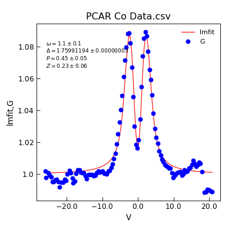

Strijkers¶
-
class
Stoner.analysis.fitting.models.superconductivity.Strijkers(*args, **kwargs)[source]¶ Bases:
lmfit.model.Modelstrijkers Model for point-contact Andreev Reflection Spectroscopy.
- Parameters
V (array) – bias voltages
omega (float) – Broadening
delta (float) – SC energy Gap
P (float) – Interface parameter
Z (float) – Current spin polarization through contact
- Returns
Conductance vs bias data.
Note
PCAR fitting Strijkers modified BTK model TK PRB 25 4515 1982, Strijkers PRB 63, 104510 2000
This version only uses 1 delta, not modified for proximity
Example
"""Demo of new Stoner.Analysis.AnalyseFile.lmfit""" from os.path import join from Stoner.analysis.fitting.models import cfg_data_from_ini, cfg_model_from_ini from Stoner import __home__ config = join(__home__, "..", "scripts", "PCAR-New.ini") datafile = join(__home__, "..", "sample-data", "PCAR Co Data.csv") d = cfg_data_from_ini(config, datafile) model, p0 = cfg_model_from_ini(config, data=d) fit = d.lmfit(model, result=True, header="lmfit", output="report") d.plot_xy(0, [2, 1], ["r-", "bo"]) # plot the data d.annotate_fit(model, x=0.05, y=0.75, fontdict={"size": "x-small"}) print(fit.fit_report())
Attributes Summary
Methods Summary
guess(data, **kwargs)Guess starting values for a good Nb contact to a ferromagnet at 4.2K.
Attributes Documentation
-
display_names= ['\\omega', '\\Delta', 'P', 'Z']¶
Methods Documentation

{kind=link}
{kind=link}